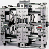
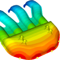
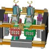
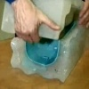
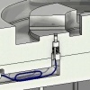

|
|
| Rapor - Makale
> Plastik Teknolojisi: |
Plastik enjeksiyonda birden çok arayüzlü kalýp "stack mold" teknolojisi ve uygulamalarý:
Rýza Aþkar, Gazi Üniv. TEF Kalýpçýlýk Öðretimi, 2007 Ankara
Tek arayüzlü 4 gözlü kalýpta bir çevrimde 4 adet ürün elde edilebilirken, iki arayüzlü 2x4 gözlü kalýpta bir çevrimde ve hemen hemen ayný sürede 8 adet ürün elde edilebilmektedir... |
 |
Plastik enjeksiyon simülasyonu:
Ahmet Barýþ Kuldaþlý, CAD/CAM/CAE Müh., UMTAÞ A.Þ., Kasým 2005, Ýstanbul
Parça tasarýmý sýrasýnda analiz programlarýnýn kullanýmý imalat aþamasýna geçildiðinde çýkabilecek sorunlarýn ortadan kalkmasýný saðlar. Tespit edilebilecek bu hatalarýn büyük bir çoðunluðu hacimsel kökenlidir ve parça tasarýmýnda küçük deðiþiklikler yapýlarak giderilebilir... |
 |
Ortak çalýþma özellikli ara plakalý ardýþýk kalýp sistemleri (stack mold):
Mustafa Kurt, Ömer Þaban Kamber, Oðuz Girit, Ekim 2005, Ýstanbul
Birden fazla kalýbýn arka arkaya eklenmesiyle birkaç kalýbýn iþlevini gören ve tek bir enjeksiyon makinesiyle çalýþan daha verimli ve üretim kapasitesi daha yüksek kalýp sistemlerine Stack kalýp sistemleri denir. Bu sistemde 2, 3 veya 4 kalýp arka arkaya eklenebilir... |
 |
Vakum döküm uygulamalý eðitim videosu:
Silikon
Kalýplama, Vakum Döküm Eðitimi (Video, Süre 13:40) Kaynak: MK Technology GmbH.
Not: Ýlk defa TurkCADCAM.net
Dergisi Ocak-Þubat 2006 Sayýsý ile birlikte verilen CD'de yer almýþ bu video, Aðustos 2008'de TurkCADCAM.net portalýndan yayýnlanmaya baþlamýþtýr. |
 |
Ko-enjeksiyon (co-injection molding, multi component molding, sandwich molding):
Hakan Þahin, Gazi Üniv. T.E.F. Kalýpçýlýk Öðretmenliði, Haziran 2008, Ankara
Ko-enjeksiyon yöntemi plastik enjeksiyon kalýplarý mantýðýnda fakat iki ya da daha fazla renkli ya da farklý malzemelerin ayný kalýpta kalýplanma tekniðidir. Bilinen kalýp mantýðýyla bazý farklýlýklarý vardýr; En büyük farklýlýklar kalýptaki yolluk konumlarý ve makinelerdedir... |
|
Plastik ürün tasarýmýnda dikkat edilmesi gereken hususlar:
Selim Yýldýrým, FARDÝZAYN, Yrd. Doç. Dr. Ahmet Demirer, Sakarya Üniv., Nisan 2008
Bu çalýþmada, malzemesi ve yöntemi seçilen plastik mamule çekme paylarý hesaba katýlarak verilmesi gerekli toleranslardan bahsedilmiþ, delikler, yuvarlatmalar, cidar kalýnlýðý, ayrým hattý, kaburgalar gibi ürün tasarýmýný etkileyen hususlar örnek þekillerle açýklanmýþtýr... |
|
Ürün kalitesinde kararlýlýðý saðlayabilmek için plastik enjeksiyon kalýplarýnýn piezoelektrik sensörler ile denetimi:
Prof. Dr. Mustafa Kurt, Oðuz Girit, A.Talat Ýnan - Marmara Üniv. Teknik Eðitim Fakültesi
Ömer Þaban Kamber - Ýhlas Ev Aletleri A.Þ., Þubat 2006, Ýstanbul
Bu çalýþmada, deneme üretiminde elde edilen optimum baský deðerlerinin baský esnasýnda sensörler (algýlayýcý) yardýmýyla ölçülerek denetiminin nasýl yapýlabileceði ve... |
 |
Plastik enjeksiyon kalýpçýlýðýnda vidalarýn kalýplanmasý:
Yalçýn Çýnar, Uzden Plastik ve Kalýp Sanayi, Aðustos 2007
Dýþ diþlerin merkezinden geçen kalýp ayrým çizgisi, vidayý ikiye bölen bir iz yaratýr. Zaman içerisinde kalýbýn aþýnmasý, eksenden kaymasý gibi durumlar oluþtuðunda, vida üzerindeki iz büyüyebilir, vida eksenleri kayabilir ve diþler birbirinden uyumsuz halde kalýplanabilir...
|
|
Ýç içe geçen plastik kaplar için enjeksiyon kalýp tasarýmý ve örnek bir uygulama:
Yalçýn Çýnar, Uzden Plastik ve Kalýp Sanayi, Aðustos 2007
Tasarýmýnda ve imalatýnda bir çok önemli kurallara uyulmasý gereken tabaklar, saksý ve saksý altlýklarý, kovalar, saklama kaplarý gibi yuvarlak ve dikdörtgen kesitli kalýplarýnýn tasarýmýnda dikkat edilmesi gereken noktalarý sýra ile inceleyelim... |
|
Bilgisayar destekli plastik enjeksiyon kalýbý tasarýmý:
Bilen Emek Abalý, ÝTÜ Makine Müh. Böl., Þubat 2006, Ýstanbul
Bu çalýþmada, plastik enjeksiyon üretim yönteminin avantajlarý ve geliþmiþ özelliklere sahip polimer malzemelerin çeþitliliði ile ülkemizde de yaygýn mühendislik çalýþmalarýyla geliþen plastik enjeksiyon kalýbý tasarýmcýlýðýnda yeri artan bilgisayar destekli konstrüksiyonun kullanýmý ve basit bir kalýp tasarýmýnda uygulamalý örneklenmesi hedeflenmektedir... |
|
Mühendislik plastikleri ve karþýlaþtýrmalý özellikleri:
Ömer Karaarslan, RDG Bilgi ve Üretim Teknolojileri, Mart 2007
Mühendislik Uygulamalarýnda Plastiklerin Saðladýðý Avantajlar; Parça Konsolidasyonu, Montaj Kolaylýklarý, Boyama ve yüzey iþlemlerinin ortadan kalkmasý, Yüksek "Mukavemet/Aðýrlýk" oraný, Kimyasal Mukavemet, Darbe Mukavemeti... |
|
Plastik
malzemeler:
Ömer Karaarslan, RDG Bilgi ve Üretim Teknolojileri, Mart 2007
Dünya'da sýnýrlý olan malzeme kullanýmý bilim ve teknolojideki yeni geliþmeler sonucunda çeþit ve kalite yönünden büyük geliþmeler göstermiþtir. Bu malzemelerden biri ve belki de en önemlisi plastiklerdir. Plastikler son 20 yýlda önemi giderek artmakta ve daha yaygýn bir kullaným alaný bulmaktadýr... |
|
Plastik
ürünlerde vida yuvasý (screw boss) tasarýmý:
Yalçýn
Çýnar, Taybor Mak. Kalýp San., Mayýs 2006, Manisa
Vidalar plastik parçalarýn montajlanmasýnda yaygýn olarak
kullanýlýrlar. Plastik ürün tasarýmcýlarýnýn, saðlýklý
ve uzun ömürlü, vida yuvasý (boss) tasarýmlarý yapabilmeleri
için bilmeleri gereken bazý kurallar vardýr.
Çoðu zaman duvar kenarlarýnda düþünülen vida yuvalarýnýn,
uygun olmayan ölçülerde yapýlmasý sonucu çöküntülere
sebep olarak, nihai üründe görünümü etkilediði bir gerçektir... |
|
Plastik
Enjeksiyon Kalýpçýlýðýnda Esnek Menteþe Dizayný:
Yalçýn
Çýnar, Taybor Mak. Kalýp San., Nisan 2006, Manisa
Esnek
menteþeler, ince esneyebilen bir að geçidi ile iki parçayý
birbirine baðlarlar. Esnek menteþeli kalýp dizayný ne
kadar iyi olursa olsun, kalýplamada doðru plastik malzeme
kullanýlmadýðýnda, baþarýsýzlýkla karþýlaþmak normaldir.
Uzun ömürlü esnek menteþeler için PP (polipropilen)
ve PE (polietilen) tercih edilmelidir. Uzun ömür beklenmeyen
parçalarda, hammadde olarak Naylon'un kullanýlmasý mümkündür... |
|
Plastik
Enjeksiyon Kalýpçýlýðýnda Delikler:
Yalçýn
Çýnar, Taybor Mak. Kalýp San., Nisan 2006, Manisa
Plastik
enjeksiyon ürün ve kalýp tasarýmcýlarý ve kalýp imalatçýlarýnýn
karþýlaþtýklarý en büyük problemlerden birisi de deliklerdir.
Delikler, "Kör delikler" ve "Patlak delikler"
olarak iki gruba ayrýlýr. Kalýplanmýþ ürün üzerindeki
delikler, kalýpçýlýkta kolay yöntemlerle imal edilirler.
Kalýp çekirdeði içerisindeki erkek pimler, nihai üründe
delikler meydana getirirler. |
|
Plastik
Enjeksiyon Kalýpçýlýðýnda Feder Dizayný:
Yalçýn
Çýnar, Taybor Mak. Kalýp San., Nisan 2006, Manisa
Plastik enjeksiyon ürün, kalýp tasarýmcý ve imalatçýlarýnýn
en çok karþýlaþtýðý problemlerden birisi; feder yerlerinin
tespiti ve feder arkalarýnda oluþan çöküntü izleridir.
Bu sorunun üstesinden gelmek için federlerin yerleþim
yerleri, çýkma açýlarý ve ölçüleri uygun deðerlerde olmalýdýr.
|
|
Polimer
esaslý kompozit malzemeler ve ürün tasarýmýnda kullanýmlarý:
Ayhan
Enþici, Araþtýrma Görevlisi, ÝTÜ Edüstri Ürünleri Tasarýmý
Bölümü
Kompozit
malzeme tanýmý, temel olarak iki veya daha fazla malzemenin
bir arada kullanýlmasýyla oluþturulan ve meydana geldiði
malzemelerden farklý özelliklere sahip yeni tür malzemeleri
belirtmek için kullanýlmaktadýr. Genel olarak ise kompozit
malzeme denildiðinde -ve bu yazýda bahsedilecek olan-
elyaf ile güçlendirilmiþ plastik malzemeler anlaþýlmaktadýr... |
|
|
|
|
TurkCADCAM.net > Türkiye'nin yeni ürün tasarım, geliştirme, CAD/CAM/CAE, CNC, kalıp ve imalat teknolojileri portalı |
*****
Sektörün profesyonel bilgi ve işbirliği platformu ***** |
|
|
|
|
|
|